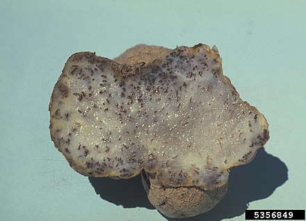
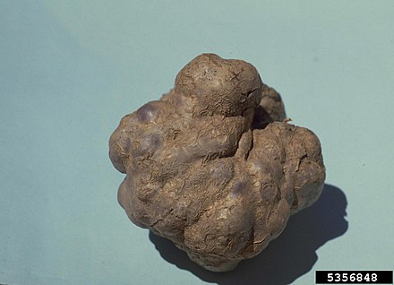

Thecaphora solani
Thecaphora solani, potato smut, is a fungal plant pathogen.
It affects plants, primarily potatoes, in the Andean part of South America.
The disease of potatoes that it causes is economically important (there have been reports of crop losses up to 80 percent in South America).


Thecaphora solani, potato smut, is a fungal plant pathogen.
It affects plants, primarily potatoes, in the Andean part of South America.
The disease of potatoes that it causes is economically important (there have been reports of crop losses up to 80 percent in South America).
.container; {
height:50px ;
width:100px;
}